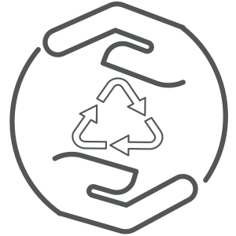

<!--
  Generated template for the NavigationBarDesktopPage page.

  See http://ionicframework.com/docs/components/#navigation for more info on
  Ionic pages and navigation.
-->
<ion-header>
    <ion-navbar>
      <div id="nav-image">
        

      </div>

      <div id="nav-buttons">
          <button ion-button [navPush]="schedulesPage">Schedules</button>
          <button ion-button [navPush]="mapsPage">Maps</button>
          <button ion-button [navPush]="auditFormsPage">Audit Reports</button>
      </div>
      
    </ion-navbar>
  </ion-header>
